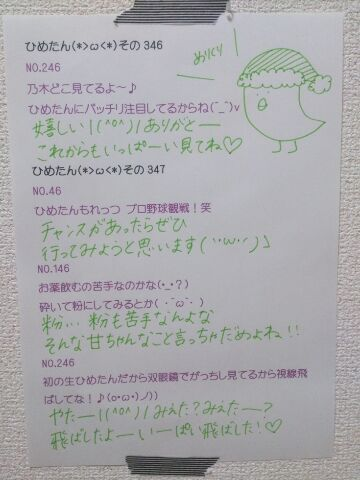

| 2013/12 25 Wed | ひめたん(*>ω<*)そ の386 |
みなさんメリクリー∩( ^ω^ )∩

めりくり！
サンタさんじゃなくてひめたんが
プレゼントじゃなくて日記書きますよー
生写真 サンタ服ひめたんですこんばんは＊
みなさんクリスマスは
いかがお過ごしですかー？
昨日は１日オフだったのですが
年賀状書いて課題やったら終わってしまった......
いっいや！
カラダが休まってよかったんだよ！
別に あっけなかったなーとか思ってないし！
そんなわけでーここからは
みなさんにささやかな
クリスマスプレゼントってことで
良い子のおとこのこ宛に
妄想クリスマス のシナリオの一部←
良い子のおにゃーのこ宛に
ひめたんのお気に入りアイテム紹介
をしようと思いまーすっ
それぞれ興味がなかったら
スクロールしてぶっ飛ばしてくださーい(笑)
 妄想クリスマス
妄想クリスマス
大好きな(あなた)は
私よりちょっと年上で
お兄ちゃんみたいなひと
いつも私を子供扱いばかりしてくる
私にとってそれは
ちょっとばかりもどかしい...
今日はクリスマスデートの日
ふたりが付き合ってはじめてのクリスマスだ
こんな日こそ
楽しい時間はあっという間に終わってしまうもの。
ひめか
「今日は楽しかったーありがとうね☆」
あなた
「待って！はい、クリスマスプレゼント」
彼からのプレゼントは
かわいらしい くまのぬいぐるみだった
ひめか
「わーかわいい！ありがとう！」
あなた
「気に入った？やっぱりなー
ひめかはまだこどもだからこれで十分だよなー
じゃあ気をつけて帰るんだぞー」
ひめか
「いつもそうやってばかにするんだからー
だいじょうぶだよーじゃあね！」
私はひとりで家路に向かった。
(あなた)にとって私はやっぱり
妹みたいな、仲良しな後輩でしかないのかな
本当は恋人って思われてないのかな
私は本気で(あなた)のことが好きなのに...
家に帰ってから私は
ひとりでくまのぬいぐるみと戯れて遊んだ
ひめか
「ふんだ！どーせ私はこどもだもーん！」
ぽーんぽーんとぬいぐるみを
宙に向かって思いっきり投げていたその時......
(割愛・完)
ねえ！どーだった？
ひめたんとクリスマスデートできたでしょ？
あっちなみに
これは前回の乃木どこの企画で
ひめたんは披露しなかったけど脚本はしたのー！
え？短い？
ラストを割愛するなって？
ごめんねーでも
ダイジェスト盤って
こんなもんでしょ( ´ ▽ ` )笑
ほら、物語のクライマックスは
みなさんで好きにつくってみてよ！ね？
ちなみにひめたんが脚本した
妄想クリスマスの結末を知ってるのは
アンケートをちら見した若月とまいまいだけ。
ひめたんのお気に入りアイテム紹介
◎ skin care
今はKIEHL'Sの美白ラインを使ってます♪
ニキビさんに悩んでた時は
プロアクティブも良かったよー
それから化粧水は
無印良品のオーガニックのやつもおすすめ
コットンパックたまにするよー
◎ make

(上段)
・BBクリーム...ettusais
・パウダー...ettusais
・コンシーラー...24h Cosme
・チーク...ETUDE HOUSE
・シェーディング...CANMAKE
・ハイライト...CANMAKE
(下段)
・アイブロウ
・マスカラ(左)...dejavu
・マスカラ(右)...MAYBELLINE
・アイライン
・アイシャドウ...RIMMEL
・グロス(左)...MAJOLICA MAJORCA
・リップクリーム...MAYBELLINE
・グロス(右)...PUFFY LIP SERUM
アイブロウとアイラインは
表示が消えちゃってわかんないの(´・ω・｀)
ごめんねー
メイベリンのマスカラは
ボリュームを出したい時に足す！
グロスはマジョマジョがラメ入り
puffy lip serumはラメ無しなので
時と場合によって使い分けますっ
◎ hair care
シャンプー、コンディショナーは
Je l'aimeのモイストリペア
KERASTASEのHUILE SUBLIMEっていう
洗い流さないトリートメントも
おすすめだよ( ^O^ )
◎ Vita Coco
ココナッツウォーター
ムクミをすっきりしてくれる！
味が苦手な方が
いらっしゃるかもしれないです
◎ BODY FANTASY Vanilla Fantasy
ボディスプレー
いろんな香りがあるよねー
バニラの香りがお気に入りです
◎ THE BODY SHOP ストロベリーボディバター
マッサージする時は
このボディバターを使います
いろんな香りがあるけど
ひめたんはストロベリー派＊
あとはお馴染みひめたんりぼんを集めたり
最近はアロマ加湿器にハマったりして
おにゃーのこ満喫しておりますよ(´^ω^｀)
参考になったらうれしいな///
なんかおすすめのアイテムあったら教えてねー
情報共有しよーうっ
ひめたんのブログの
コメント欄下２ケタに46を踏んだ方へ
手書きでコメ返するコーナー
＼ ひめたん46 ／

いつもコメントありがとーう( ^O^ )
今日はお仕事に行ってきます！
終わったらみんなで
クリスマスする予定ー♪♪
(＊´・ω・＊)
コメント(453)
2013/12/25 10:30